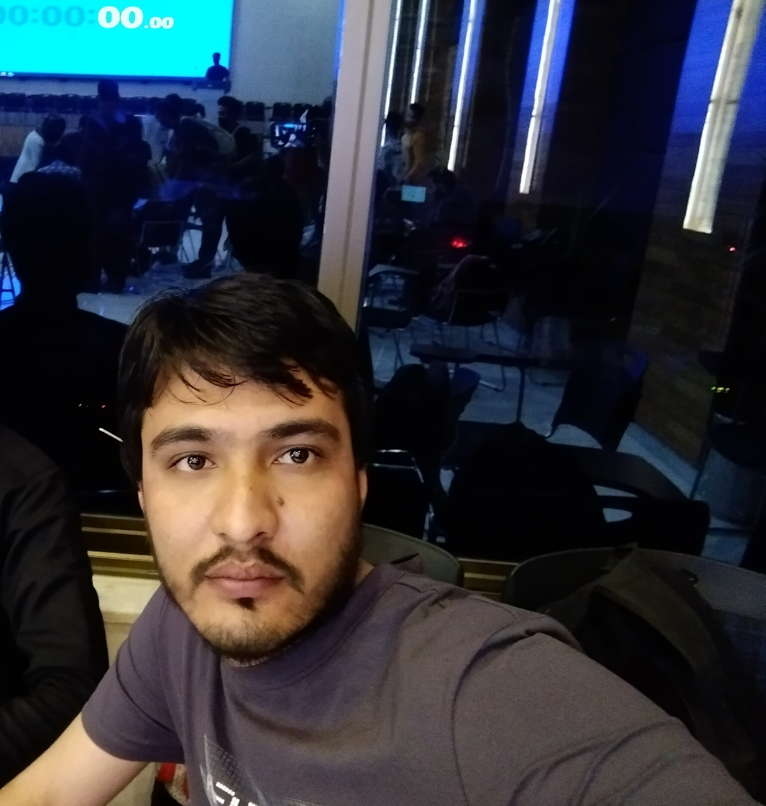

I am an outgoing and energetic young professional, seeking a
career that fits my professional skills, personality, and murderous tendencies.
My squid-like head is a masterful problem solver and inspires fear in who gaze upon it.
I can bring world domination to your organization.
- Education
-
Iqra University - ISLAMABAD
Major: Public Relations
Minor: Scale Tending
- Skills
-
Football
I Play Football very well
Computer skills
Microsoft productivity software (Word, Excel, etc), Adobe Creative Suite, Windows
- Experience
-
Softare House April 2020 – present
- Developed and designed three critical software programs for financial tracking and reporting
- Optimized user effectiveness by creating a detailed feedback queue for users to discuss functionality, convenience, and effectiveness.
- Oversee a team of four software developers and lead weekly discussions to brainstorm ideas in software development and to track changes made in existing programs.
Software Developer April 2019 – 2020
- Participated in creating scalable systems for three primary departments, including human resources, marketing, and supply chain.
- Ran monthly unit tests to determine software effectiveness and mend broken links or glitches in the system
- Gave quarterly reports to executive management regarding current developments, and tracked changes in existing software.
- Hobbies
- Reading Books, Listening Music, Cricket
- References
- Available on request